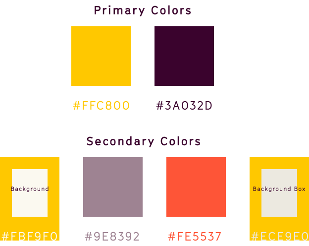

From just a few b&w films to thoudands of shows and movies popping up within a year, the media industry has come a long way. There are so many great shows to choose from but so little time. Also, not all content suits our interests and we end up wasting time.
As of March 2020, Netflix had 2.2 million minutes of content available. More than 30k hours of content is uploaded on Youtube every minute. We possibly cannot manage to watch it all. We mindlessly scroll through the most irrelevant content.
I believe, in the near future, the over-the-top (OTT) platforms/channels having the most well rounded content will take away the trophy of maximum viewers.
How I Began Thinking About this Project?
My dad! He is really choosy about the shows he watches. He spends hours deciding watch to watch. The problem? This is what ‘he’ thinks. But in reality, he is simply “overwhelmed” by the number of options. After some research, I found out that this a universal issue.
The Flow of Thoughts
What if there was an app to simplify recommendations? But all the major streaming sites have amazing algorithms to figure that out.
So, what can I do different? What about an app which does more than ‘just’ recommend?
Maybe, show recommendations based on 'time of the day', 'location', etc instead of showing recommendations based on what we are watching.
Also, a large number of users are not able to afford the shift to a subscription based economy. It was time to think along those lines too.
Therefore, here is my take on the future of media consumption!
Key Problems That Inspired this Project
Content Fragmentation
Fragmentation of various media sources and devices has made it increasingly complex for users to discover & manage media consumption. Q. What is Fragmentation? A. Fragmentation = the process or state of breaking or being broken into fragments.
Excessive Expenditure on OTT Subscriptions
There is a lurking ‘FOMO’ when everyone around is watching a ‘trending’ show and we aren’t able to watch it. This is mostly because of unavilibilty of subscriptions. Eventually, we end up spending recklessly. Instead, it’d be better if we prioritized what we watch and managed our subscriptions.
Recommendation Overload
Consumers are overburdened & overwhelmed by the large number of choices. An average human makes approx 35k choices per day. A study made by professor Barry Schwartz at Swarthmore College showed that too many options can lead to stress, anxiety and discontent.
Short Attention Span
Getting easily bored of any form of media is the ‘cult’ now. Our brains have started adapting to a 15-30 seconds entertainment formula. Users need to focus on what they like for a longer period of time and truly enjoy the storylines without any distractions and absurd suggestions.
Research Methodologies
>I prepared a Google form and sent it to 250 respondents. The age group I chose was between 16-50. This was delberately done because OTT platfomrs and streaming services are most useful to this age group.

User Journey Mapping
There were 2 core features this application is solving: - simplified recommendation for effortless viewing - - subscription management to save time & money -
I created a user flow from start till the end including various touchpoints and numerous emotions a user might go through while using the app.
Wireframing
After countless ideas and sketches, I came up with a wireframe that would strike a blance between a browser and a streaming platform. This was because I wanted to provide users a one-stop-solution. I took inspiration from Google Chrome, Netflix, and Splitwise and merged them with a few of original ideas.
The reason I took inspiration from such popular apps is because people hate change. Once, they get used to a product, they accept that as a common convention of working. For example, we all have a fixed idea about how a browser’s interface should work. Anything different would through us off guard and we might not use the app again. So, in order to create a familiarity, below were the wireframes I made.
A unique color system comprising of two primary colors: canary yellow & raisin purple. The goal was to deviate from the typical dark theme. Although it makes more sense for media sites to adapt to dark theme, I wanted to test out how’d users respond to a light theme. According to research, 77% of users found the color combination and the light theme rather pleasant to use. This is the reason I went ahead and implemented it in my portfolio.

Prototyping
(PS. excited to share this part)
A 8pt and 24pt system. All spacings and containers are in multiples of 24. There are four font sizes: 16pts, 24pts, 32pts, and 48pts
3 Modes of Recommendations
Know Your User
It’s important to know the user to give them better recommendations. The user can also ‘skip’ this section. The app also pulls recommendations from the friends the user follows. This data will be integrated via Facebook, Google, Apple ID, and Instagram.
Single Show/Movie View
Share a Sub
Subscription Management
Watchlist Home View
A unique Way of Tracking
Do you have an endless list of media to watch? Don’t worry! The management feature allows you to accurately scehdule the upcoming TV shows and movies you want to watch. Give the details of your shows and how much time you want to spend, etc. The app will automatically fix up the mess for you.
Continue Watching
The ‘Continue Watching’ tab is following the ‘dark theme’ as viewers usually prefer a dark background while viewing movies and shows. Through this section the user can also switch between the ‘subscribed’ platforms.
Instant Alerts
The Prototype at a Glance
and lastly...
Television View
Once the viewing parameters are set, the user can directly login from the Televison app and view the shows and movies.
Key Takeaways
Design is ever evolving. Sometimes, designers get stuck on what they started out with. They refuse to re-iterate. It happened with me, too. It became really important for me to be open-minded when it came to this project.